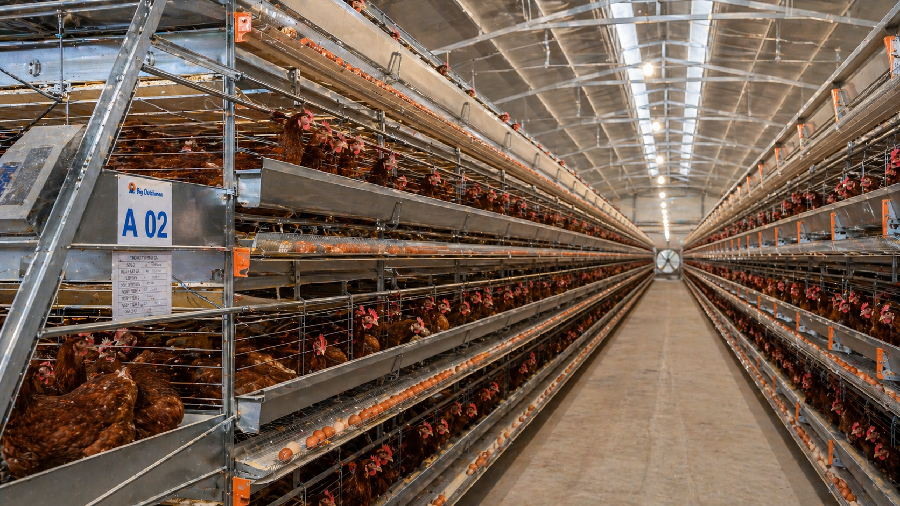

行业公认蛋鸡產蛋高峰期（>90%产蛋率）仅维持32-36周，72週齡产蛋率普遍降至78-82%。每一周高峰期的缩短都是成千上万元的直接損失。好品种≠好成绩，关键在于后期營養调控能否跟上。活力得®枯草菌源蛋白酶通过调节生殖激素，帮助延長高峰4-6周。
暗斑蛋（水印蛋）是蛋鸡场最头疼的隐性成本。调查显示蛋鸡场暗斑蛋发生率普遍在5-15%，有些场甚至高达20-30%。暗斑蛋严重影响外观、货架期和品牌形象，在商超和蛋品分级中直接判定為B级或次级蛋，每斤少卖3-5毛钱。活力得®枯草菌源蛋白酶优化蛋壳腺碳酸酐酶活性，暗斑蛋減少70%以上。
2025年蛋鸡养殖利润跌至近五年最低水平，行业大面积亏损。饲料成本占总成本65-70%，料蛋比每改善0.1就是纯利润的挽回。老龄蛋鸡（50週齡以上）产蛋率自然下降，淘汰率攀升，延長產蛋周期的技术缺口巨大。活力得®枯草菌源蛋白酶通过提升消化效率，顯著改善FCR。
活力旺®，从營養调控到生殖健康，系统性解决蛋鸡养殖的三大核心痛点。

※ 数据來自：①ResearchGate 2017（FCR/哈氏单位/蛋壳强度）；②中科院亚热带农业生态研究所2023（破蛋率-9.74%）；③MDPI 2021（蛋黄色泽提升）；④活力旺®蛋鸡田間對照试验（暗斑蛋、產蛋高峰维持）。建议设立對照组验证实际效果。


活力旺®预混型产品，20公斤/袋，按1公斤兑1吨產蛋期全价饲料均匀混合，开袋即用。
高龄蛋鸡（50週齡以上）或暗斑蛋高发场可提升至1.5公斤/吨。适用階段：从產蛋开始（18週齡）持续使用至淘汰（72-80週齡）。
活力得®枯草菌源蛋白酶高效分解大分子蛋白质為小肽和氨基酸，提升腸道吸收利用率（PMC 2018）。
→ 同样的饲料，蛋鸡吸收更多蛋白质。吃得少，產蛋一样多，料蛋比直接改善。
精准调控脂肪合成/分解代谢通路，减轻肝脏负担，预防脂肪肝。
→ 脂肪肝是蛋鸡中后期常见问题。活力得®让脂肪不堆在肝脏，蛋鸡更健康、產蛋更持久。
嵌入肝脏线粒体膜，激活细胞色素c氧化酶，ATP合成效率提升25-30%（MDPI 2014）。
→ 蛋鸡的生殖系统需要大量能量。活力得®让细胞产能更高效，產蛋高峰自然延長4-6周。


| 品种 | 主要省份 | 基准产蛋率 | 高峰期长度 | 平均蛋重 | 活力旺优势 |
|---|---|---|---|---|---|
| 海兰褐 | 华北/东北/华东 | 90-95% | 32-36周 | 63-65g | 產蛋高峰延長4-6周，暗斑蛋↓ |
| 罗曼褐 | 华中/华南/西南 | 90-93% | 30-34周 | 64-66g | FCR改善4.9%，蛋壳强度+39.5% |
| 京红1号 | 华北/东北/西北 | 92-95% | 32-38周 | 62-64g | 高产蛋率维持，淘汰率↓15% |
| 伊莎褐 | 华南/西南 | 90-93% | 30-34周 | 62-64g | 高峰期维持+4周，暗斑蛋減少 |
※ 以上数据為行业标准基准，实际效果因品系、饲养密度、營養管理、季节而异。建议在自家鸡群中设立"有添加/無添加"對照组验证效益。

规模：500-1000羽產蛋鸡（同品系、同日齡），连续使用6-8周，對照组同等规模不添加，记录产蛋率、破蛋率、暗斑蛋比例变化。建议同时跟踪采食量和体重，便于计算FCR。
规模：扩大至2000-5000羽，持续使用至72週齡，追踪產蛋高峰维持长度、FCR、蛋品分级比例（A/B级）。重点评估高龄期（50周后）产蛋率下降幅度，對比對照组差异。
规模：全场蛋鸡导入，建立"高产蛋率＋优蛋品＋低暗斑蛋"体系，目标：產蛋高峰期维持36-40周，72週齡产蛋率维持84%以上，符合欧盟無抗标准，出口蛋品满足BAP/GlobalG.A.P.认证。

※ 田間试验參考值，实际收益因管理条件而异。以1万羽蛋鸡场、產蛋期72周、蛋价按市场基准、每羽日采食115g為基准。
立即諮詢活力旺®代理商
※ 活力旺®代理商提供完整试验记录表单，含产蛋率记录表、FCR计算表、暗斑蛋检测卡、蛋黄比色卡。
※ 本页面数据來自活力旺®田間试验及已发表文献（ResearchGate 2017/MDPI 2021/PMC 2018/中科院2023）。
※ 实际效果因鸡只品种、饲养密度、饲料配方、季节而异。建议设立同场同品种對照组验证效益。
※ 投入產出比為參考值，不构成任何投资建议。
行业公认蛋雞產蛋高峰期（>90%產蛋率）仅維持32-36周，72週齡產蛋率普遍降至78-82%。每一周高峰期的缩短都是成千上万元的直接損失。好品种≠好成绩，关键在于后期營養调控能否跟上。活力得®枯草菌源蛋白酶通过调节生殖激素，帮助延長高峰4-6周。
暗斑蛋（水印蛋）是蛋雞場最头疼的隐性成本。调查显示蛋雞場暗斑蛋发生率普遍在5-15%，有些场甚至高达20-30%。暗斑蛋严重影响外观、货架期和品牌形象，在商超和蛋品分级中直接判定為B级或次级蛋，每斤少卖3-5毛钱。活力得®枯草菌源蛋白酶优化蛋殼腺碳酸酐酶活性，暗斑蛋減少70%以上。
2025年蛋雞養殖利润跌至近五年最低水平，行业大面积亏损。飼料成本占总成本65-70%，料蛋比每改善0.1就是纯利润的挽回。老龄蛋雞（50週齡以上）產蛋率自然下降，淘汰率攀升，延長產蛋周期的技术缺口巨大。活力得®枯草菌源蛋白酶通过提升消化效率，顯著改善FCR。
活力旺®，从營養调控到生殖健康，系统性解决蛋雞養殖的三大核心痛点。
※ 数据來自：①ResearchGate 2017（FCR/哈氏单位/蛋殼强度）；②中科院亚热带农业生态研究所2023（破蛋率-9.74%）；③MDPI 2021（蛋黃色泽提升）；④活力旺®蛋雞田間對照試驗（暗斑蛋、產蛋高峰維持）。建议设立對照组驗證實際效果。
活力旺®预混型产品，20公斤/袋，按1公斤兑1吨產蛋期全价飼料均匀混合，开袋即用。
高龄蛋雞（50週齡以上）或暗斑蛋高发场可提升至1.5公斤/吨。适用階段：从產蛋开始（18週齡）持续使用至淘汰（72-80週齡）。
活力得®枯草菌源蛋白酶高效分解大分子蛋白质為小肽和氨基酸，提升腸道吸收利用率（PMC 2018）。
→ 同样的飼料，蛋雞吸收更多蛋白质。吃得少，產蛋一样多，料蛋比直接改善。
精准调控脂肪合成/分解代谢通路，减轻肝脏负担，预防脂肪肝。
→ 脂肪肝是蛋雞中后期常见问题。活力得®让脂肪不堆在肝脏，蛋雞更健康、產蛋更持久。
嵌入肝脏线粒体膜，激活细胞色素c氧化酶，ATP合成效率提升25-30%（MDPI 2014）。
→ 蛋雞的生殖系统需要大量能量。活力得®让细胞产能更高效，產蛋高峰自然延長4-6周。
| 品种 | 主要省份 | 基准產蛋率 | 高峰期长度 | 平均蛋重 | 活力旺优势 |
|---|---|---|---|---|---|
| 海兰褐 | 华北/东北/华东 | 90-95% | 32-36周 | 63-65g | 產蛋高峰延長4-6周，暗斑蛋↓ |
| 罗曼褐 | 华中/华南/西南 | 90-93% | 30-34周 | 64-66g | FCR改善4.9%，蛋殼强度+39.5% |
| 京红1号 | 华北/东北/西北 | 92-95% | 32-38周 | 62-64g | 高產蛋率維持，淘汰率↓15% |
| 伊莎褐 | 华南/西南 | 90-93% | 30-34周 | 62-64g | 高峰期維持+4周，暗斑蛋減少 |
※ 以上数据為行业标准基准，實際效果因品系、饲养密度、營養管理、季节而异。建议在自家鸡群中设立"有添加/無添加"對照组驗證效益。
規模：500-1000羽產蛋雞（同品系、同日齡），连续使用6-8周，對照组同等規模不添加，记录產蛋率、破蛋率、暗斑蛋比例变化。建议同时跟踪采食量和体重，便于计算FCR。
規模：扩大至2000-5000羽，持续使用至72週齡，追踪產蛋高峰維持长度、FCR、蛋品分级比例（A/B级）。重点评估高龄期（50周后）產蛋率下降幅度，對比對照组差异。
規模：全场蛋雞导入，建立"高產蛋率＋优蛋品＋低暗斑蛋"体系，目标：產蛋高峰期維持36-40周，72週齡產蛋率維持84%以上，符合欧盟無抗标准，出口蛋品满足BAP/GlobalG.A.P.认证。
※ 田間試驗參考值，實際收益因管理条件而异。以1万羽蛋雞場、產蛋期72周、蛋价按市场基准、每羽日采食115g為基准。
立即諮詢活力旺®代理商
※ 活力旺®代理商提供完整試驗记录表单，含產蛋率记录表、FCR计算表、暗斑蛋检测卡、蛋黃比色卡。
※ 本页面数据來自活力旺®田間試驗及已发表文献（ResearchGate 2017/MDPI 2021/PMC 2018/中科院2023）。
※ 實際效果因鸡只品种、饲养密度、飼料配方、季节而异。建议设立同场同品种對照组驗證效益。
※ 投入產出比為參考值，不构成任何投资建议。
行业公认蛋雞產蛋高峰期（>90%產蛋率）仅維持32-36周，72週齡產蛋率普遍降至78-82%。每一周高峰期的缩短都是成千上万元的直接損失。好品种≠好成绩，关键在于后期營養调控能否跟上。活力得®枯草菌源蛋白酶通过调节生殖激素，帮助延長高峰4-6周。
暗斑蛋（水印蛋）是蛋雞場最头疼的隐性成本。调查显示蛋雞場暗斑蛋发生率普遍在5-15%，有些场甚至高达20-30%。暗斑蛋严重影响外观、货架期和品牌形象，在商超和蛋品分级中直接判定為B级或次级蛋，每斤少卖3-5毛钱。活力得®枯草菌源蛋白酶优化蛋殼腺碳酸酐酶活性，Spot Egg Reduction70%以上。
2025年蛋雞養殖利润跌至近五年最低水平，行业大面积亏损。飼料成本占总成本65-70%，Egg FCR每改善0.1就是纯利润的挽回。老龄蛋雞（50週齡以上）產蛋率自然下降，淘汰率攀升，延長產蛋周期的技术缺口巨大。活力得®枯草菌源蛋白酶通过提升消化效率，顯著改善FCR。
活力旺®，从營養调控到生殖健康，系统性解决蛋雞養殖的三大核心痛点。
※ 数据來自：①ResearchGate 2017（FCR/哈氏单位/蛋殼强度）；②中科院亚热带农业生态研究所2023（破蛋率-9.74%）；③MDPI 2021（蛋黃色泽提升）；④活力旺®蛋雞田間對照試驗（暗斑蛋、產蛋高峰維持）。建议设立對照组驗證實際效果。
活力旺®预混型产品，20公斤/袋，按1公斤兑1吨產蛋期全价飼料均匀混合，开袋即用。
高龄蛋雞（50週齡以上）或暗斑蛋高发场可提升至1.5公斤/吨。适用階段：从產蛋开始（18週齡）持续使用至淘汰（72-80週齡）。
活力得®枯草菌源蛋白酶高效分解大分子蛋白质為小肽和氨基酸，提升腸道吸收利用率（PMC 2018）。
→ 同样的飼料，蛋雞吸收更多蛋白质。吃得少，產蛋一样多，Egg FCR直接改善。
精准调控脂肪合成/分解代谢通路，减轻肝脏负担，预防脂肪肝。
→ 脂肪肝是蛋雞中后期常见问题。活力得®让脂肪不堆在肝脏，蛋雞更健康、產蛋更持久。
嵌入肝脏线粒体膜，激活细胞色素c氧化酶，ATP合成效率提升25-30%（MDPI 2014）。
→ 蛋雞的生殖系统需要大量能量。活力得®让细胞产能更高效，產蛋高峰自然延長4-6周。
| 品种 | Main Region | Base Laying Rate | Peak Duration | Avg Egg Weight | VitalBoost® Advantage |
|---|---|---|---|---|---|
| Hy-Line Brown | North/NE/East China | 90-95% | 32-36周 | 63-65g | 產蛋高峰延長4-6周，暗斑蛋↓ |
| Lohmann Brown | Central/South/SW China | 90-93% | 30-34周 | 64-66g | FCR改善4.9%，蛋殼强度+39.5% |
| Jing Hong No.1 | North/NE/NW China | 92-95% | 32-38周 | 62-64g | 高產蛋率維持，淘汰率↓15% |
| ISA Brown | South/SW China | 90-93% | 30-34周 | 62-64g | 高峰期維持+4周，Spot Egg Reduction |
※ 以上数据為行业标准基准，實際效果因品系、饲养密度、營養管理、季节而异。建议在自家鸡群中设立"有添加/無添加"對照组驗證效益。
規模：500-1000羽產蛋雞（同品系、同日齡），连续使用6-8周，對照组同等規模不添加，记录產蛋率、破蛋率、暗斑蛋比例变化。建议同时跟踪采食量和体重，便于计算FCR。
規模：扩大至2000-5000羽，持续使用至72週齡，追踪產蛋高峰維持长度、FCR、蛋品分级比例（A/B级）。重点评估高龄期（50周后）產蛋率下降幅度，對比對照组差异。
規模：全场蛋雞导入，建立"高產蛋率＋优蛋品＋低暗斑蛋"体系，目标：產蛋高峰期維持36-40周，72週齡產蛋率維持84%以上，符合欧盟無抗标准，出口蛋品满足BAP/GlobalG.A.P.认证。
※ 田間試驗參考值，實際收益因管理条件而异。以1万羽蛋雞場、產蛋期72周、蛋价按市场基准、每羽日采食115g為基准。
立即諮詢活力旺®代理商
※ 活力旺®代理商提供完整試驗记录表单，含產蛋率记录表、FCR计算表、暗斑蛋检测卡、蛋黃比色卡。
※ 本页面数据來自活力旺®田間試驗及已发表文献（ResearchGate 2017/MDPI 2021/PMC 2018/中科院2023）。
※ 實際效果因鸡只品种、饲养密度、飼料配方、季节而异。建议设立同场同品种對照组驗證效益。
※ 投入產出比為參考值，不构成任何投资建议。